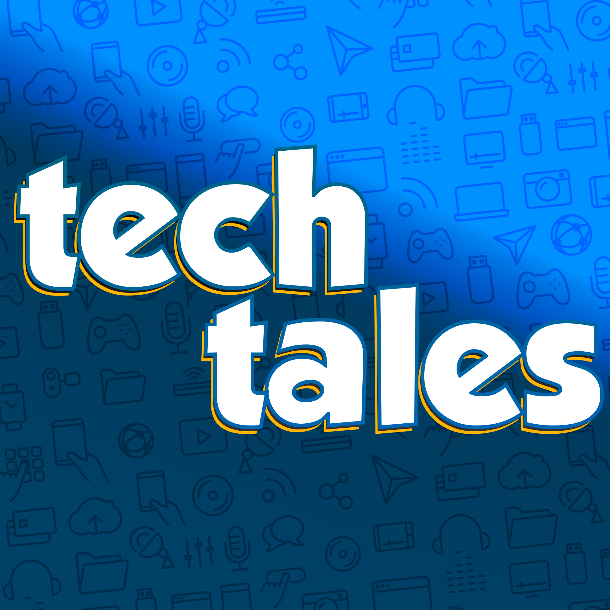

Hey everyone! I wanted to share that I have a new podcast, Tech Tales. It’s a podcast exploring the technology world’s epic failures, forgotten successes, and everything in between, with different guests every episode. I’m running a series now about Apple’s many attempts to make a new operating system for the Mac throughout the 90′s, and the latest episode is about the first (and last) PlayStation Phone.

Here are all the places you can listen to it now…